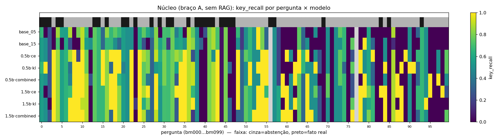
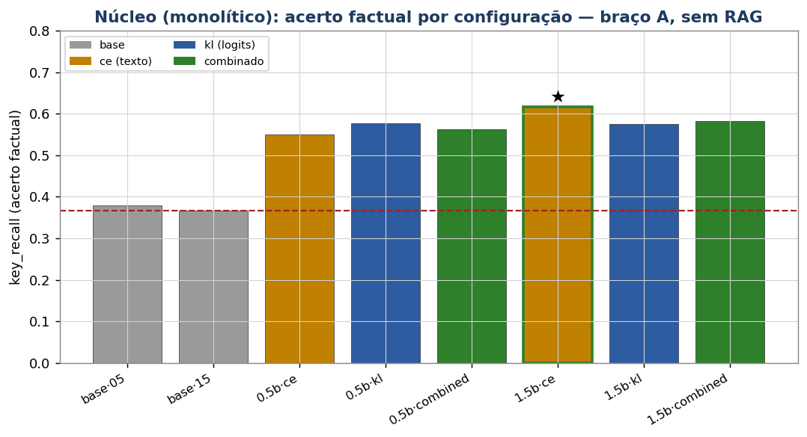
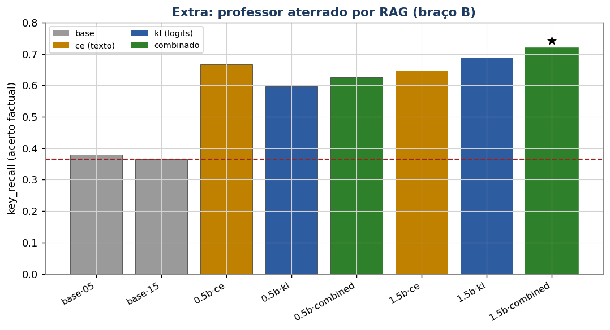
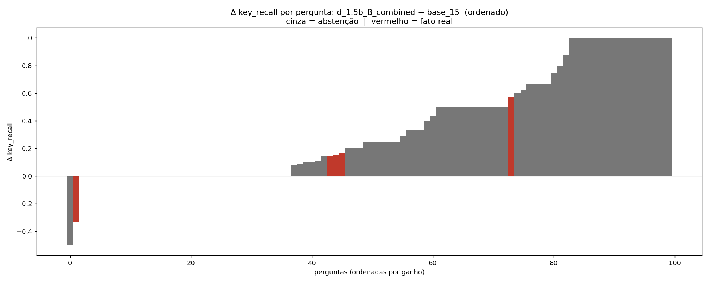
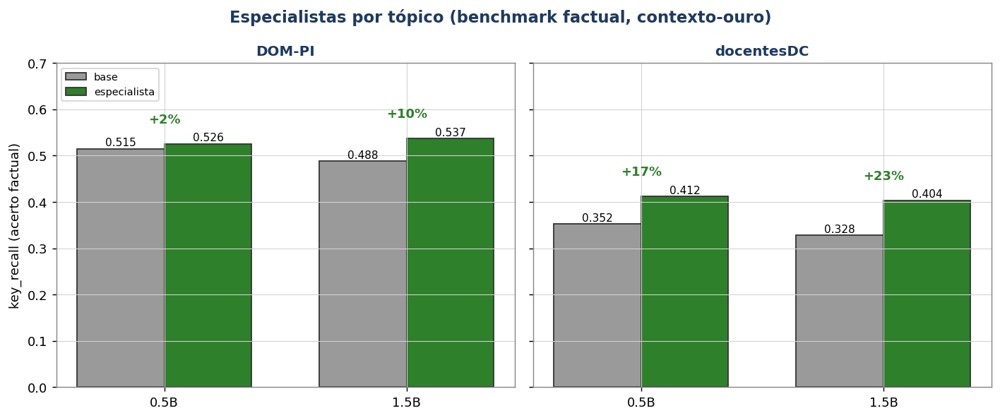
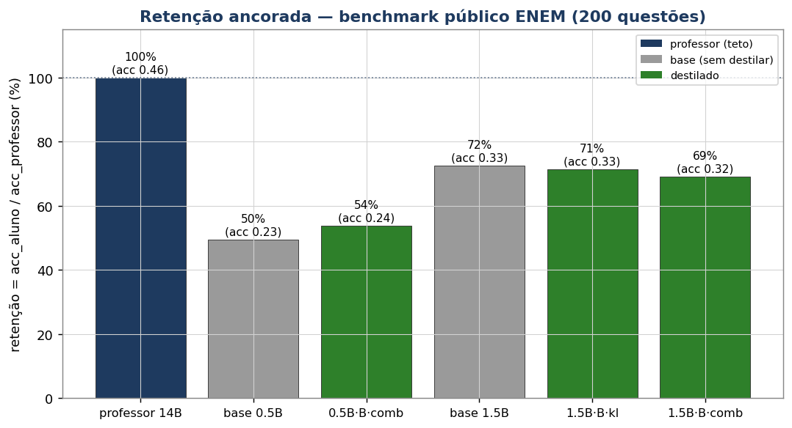

Qwen2.5-14B ensina os alunos 0.5B/1.5B por três sinais
(CE / KL / combinado). Aterrar o professor com RAG antes da geração (o braço B) é
um 🧩 extra — não é exigência da Q4; entra só para dar fatos corretos ao professor e
costurar a ponte Q4↔Q5. A versão fiel ao enunciado é o braço A (professor responde da própria
memória). As demais extensões (§§ 7–12) também são enriquecimentos. Nota de pilha: o RAG da Q5 é um índice
flat (matriz e5-base normalizada + cosseno exato em NumPy), sem banco vetorial
dedicado.
A destilação parte de uma ideia simples: um modelo grande e forte (o professor) "ensina" um modelo pequeno (o aluno) a se comportar como ele, a uma fração do custo de inferência. O aluno não reaprende o mundo — ele aprende a imitar as saídas do professor.
Há duas formas de o professor "ensinar", e a diferença é o coração desta questão:
Quatro termos que aparecem o tempo todo:
| Termo | Significado direto |
|---|---|
| Logit | pontuação bruta que o modelo dá a cada token antes da softmax (Raschka, geração de texto). |
| CE (cross-entropy) | perda que treina o aluno a reproduzir o texto do professor (sinal hard). |
| KL (Kullback–Leibler) | perda que aproxima a distribuição do aluno da do professor (sinal soft). |
| Temperatura (T) | fator que "achata" a distribuição do professor: com T alto, as alternativas secundárias ganham peso e o aluno enxerga o raciocínio completo, não só o token vencedor. |
As duas categorias de método se definem por o quanto o aluno consegue "ver" do professor. Uma analogia: imagine um aluno aprendendo com um professor humano.
Quando um modelo gera um token, internamente produz uma distribuição sobre todo o vocabulário. Ex.:
| Black-box | White-box | |
|---|---|---|
| O aluno vê… | só o texto | os logits (a distribuição) |
| Sinal | mais pobre | mais rico (confiança + alternativas) |
| Mesmo tokenizador? | Não | Sim |
| Entre famílias? | Sim | Não |
| Perda | CE | KL (ou combinado CE+KL) |
| No nosso resultado (KR, aluno 1.5B) | 0,647 | 0,717 (o teto) |
Pesquisando como os modelos de produção recentes são destilados, três padrões organizam o nosso desenho.
2.1 A prática consolidada é destilar dentro da mesma família. Os principais modelos abertos pequenos são versões destiladas de irmãos maiores da mesma linhagem (mesmo tokenizador), justamente para usar white-box logit KD. Quando se destila entre famílias, o caminho é o black-box (treinar o aluno só no texto do professor) — foi assim, por exemplo, que modelos de raciocínio foram comprimidos em alunos de famílias variadas: gerou-se um grande volume de respostas e treinou-se por SFT, sem logits.
2.2 Os três regimes técnicos e seus custos:
| Regime | Mesmo tokenizador? | Custo | Maturidade |
|---|---|---|---|
| White-box logit KD (KL sobre logits) | Sim → só mesma família | professor em memória ou logits pré-computados | padrão da indústria |
| Black-box sequence-KD (SFT no texto) | Não → qualquer família | só gerar o dataset sintético | padrão e robusto |
| Cross-tokenizer logit KD (por aproximação) | Não (aproximado) | alto, experimental | fronteira de pesquisa |
2.3 O que descartamos de propósito: cross-modalidade (imagem/voz → texto, fora de escopo); cross-especialidade (um professor de código não tem o que ensinar sobre administração pública e tende a degradar o aluno); cross-família fica só como braço black-box, reservado a extensão.
Qwen2.5-Instruct, que habilita o white-box). O aluno é o base "pristino", ponto de
partida neutro para medir o ganho.
2.5 🧩 Extra — o grounding do professor como variável de estudo. (Vai além do enunciado.) Um professor genérico não conhece os fatos do DOM-PI e, perguntado "na seco", alucina. Então, como enriquecimento, transformamos o acesso a fatos do professor numa variável controlada — os braços A e B:
| Braço | O professor responde… | O que mede | Papel |
|---|---|---|---|
| A — "zerada" | só da memória interna (sem buscar) | quanto o professor sabe sozinho (com alucinação) e quanto o aluno absorve | núcleo (fiel ao enunciado) |
| B — com RAG | com contexto recuperado do índice DOM-PI (sistema da Q5) | transferência de conhecimento factual e correto aos pesos do aluno | 🧩 extra (usa o RAG da Q5) |
| C — RAG na inferência | não destila; busca os fatos na hora (baseline Q5) | o teto: conhecimento externo (Q5) vs internalizado nos pesos (Q4) | referência (é a própria Q5) |
A pergunta-guia do extra vira: quanto dá para "assar" conhecimento dentro dos pesos do aluno (B) e quão perto isso chega de carregá-lo de fora na hora da resposta (C)? — a ponte direta entre Q4 e Q5. O núcleo da questão, porém, já é respondido com o braço A: o aluno aprende com o professor?
2.6 🧩 Extra — como o RAG recupera o contexto (mecanismo). Quando o braço B é usado, o professor
recebe um contexto antes de responder, vindo de uma busca por similaridade sobre o
corpus: (1) indexação — cada chunk vira um vetor de 768 dim. por
multilingual-e5-base, normalizado; guarda-se a matriz N×768 (aqui N ≈ 175 mil); (2)
consulta — a pergunta é embutida pelo mesmo modelo (prefixo query:), e como todos os vetores têm
norma 1, o produto interno é o cosseno; ordenam-se os chunks e tomam-se os top-k;
(3) uso — os top-k entram como contexto do professor.
argsort pega os melhores — mesma semântica de cosseno, porém exata
e sem infraestrutura extra. Um banco dedicado valeria a pena com ~10–100× mais vetores ou escrita/
consulta online. (O ChromaDB do repositório está só no pipeline de ingestão antigo,
src/vector_db/, fora das seis questões.)
White-box logit KD, mesma família (tokenizador idêntico entre o professor Qwen2.5 e os alunos
0.5B/1.5B). Professor: Qwen2.5-14B-Instruct. Alunos: Qwen2.5-0.5B e 1.5B base
"pristino" — o 0.5B dá o contraste mais visível. Dataset sintético: ~1.000 prompts (500 DOM-PI + 500 docentesDC); o
professor gera a resposta em texto (hard) e os top-50 logits por token (soft).
Não treinamos 12 alunos por repetição — é uma matriz fatorial para isolar cada fator. Três eixos multiplicados:
| Eixo variado | Opções | A pergunta que esse eixo responde | Onde entra |
|---|---|---|---|
| Tamanho do aluno | 0.5B · 1.5B | a capacidade extra do aluno maior se realiza com a destilação? | núcleo |
| Sinal de treino | CE (texto) · KL (logits) · Combinado | os logits transferem algo além do texto? | núcleo |
| Grounding do professor | A (zerada) · B (com RAG) | aterrar o professor em fatos transfere conhecimento correto? | 🧩 extra (B) |
Lendo a matriz pela lente do escopo: os 6 alunos do braço A são o
núcleo exigido — já respondem "o aluno aprende?" e "logits batem texto?" sem nenhum RAG. Os
outros 6 do braço B são o 🧩 extra: mesmo desenho, mas com o professor aterrado pelo
RAG da Q5. Só com a matriz inteira dá para afirmar, sem ambiguidade, frases como "KL supera CE no 1.5B": muda-se
um fator por vez. As três perdas: (a) CE/hard — SFT na resposta (baseline);
(b) KL/soft — aproxima as distribuições nos top-50 logits, com temperatura T; (c)
Combinado — α·CE + (1−α)·T²·KL (α = 0,5).
Duas métricas de saída, calculadas por avaliar_destilacao.py:
greedy
(max_new_tokens=200), sem nenhum contexto/RAG na inferência — mede só o que ficou
nos pesos; (3) compara com a referência fixa (a resposta do professor com RAG,
igual para todos) e calcula RG/KR; (4) agrega por média, geral e por domínio. Como benchmark, gerador e referência
são idênticos entre modelos, as diferenças são atribuíveis só ao modelo. Observação honesta:
esta avaliação de saída não mede perplexidade/token-accuracy — essas métricas de modelagem
de linguagem são as da Q1.
| # | Script | Papel |
|---|---|---|
| 1 | gerar_dataset_destilacao.py | o professor gera respostas e top-50 logits para os ~1.000 prompts |
| 2 | destilar.py | treina cada aluno com CE / KL / combinado |
| 3 | benchmark_destilacao_100.jsonl | 50 perguntas DOM-PI + 50 docentesDC |
| 4 | avaliar_destilacao.py | ROUGE-L / key_recall do professor e dos 12 alunos (protocolo acima) |
Geração: professor servido com inferência paralela em 2 GPUs (bfloat16); a pergunta é
idêntica entre A e B — só muda o contexto. Captura top-50 logits/token; o prompt já renderizado é
salvo para reproduzir o exemplo sem divergência de formatação. Destilação: aluno = base pristino,
fine-tuning completo, bfloat16, gradient checkpointing; labels alinhados a
input_ids (sem pré-shift) — a lição do bug de duplo deslocamento da Q1 — e prompt mascarado
(−100): a perda recai só sobre os tokens da resposta. Hiperparâmetros: T=2,0, α=0,5,
épocas=3, lr=1e-5 (cosine, warmup 3%), grad_accum=16, max_len=1024.
Um job gera o dataset e outro varre a matriz de 12 alunos, um por GPU.
O que acontece a cada passo de treino de um aluno, sobre um exemplo
(pergunta → resposta_do_professor) com os top-50 logits/token já em cache:
prompt + resposta num único input_ids;
os labels recebem cópia exata de input_ids (sem pré-shift — o HF já desloca
internamente) e o prompt é mascarado com −100, de modo que a perda só conta nos tokens da
resposta.logits para cada posição da resposta.softmax(logit_prof / T)
renormalizada só sobre os top-50 ids (alvo suave); do lado do aluno, log_softmax nos
mesmos 50 ids; a KL aproxima uma da outra. É o braço kl — ensina quais
alternativas o professor considerou e com quanta confiança.α·CE + (1−α)·T²·KL
(α = 0,5); o fator T² reescala o gradiente da KL para não ficar fraco quando T > 1.bfloat16 + gradient checkpointing.A comparação decisiva cai direto desse laço: o passo 4/5 (logits) entrega um aluno melhor que o passo 3 sozinho (só texto)? Foi o que ocorreu no 1.5B. E nada disso depende de RAG: o laço é idêntico nos braços A e B — o RAG só muda qual texto/quais logits o professor produziu lá atrás, na geração do dataset.
Pipeline executado no cluster (2× GPU L4). Métricas no benchmark held-out de 100 perguntas, sem RAG na inferência (testa o que ficou nos pesos). Referência = resposta do professor com RAG. RG = ROUGE-L; KR = key_recall.
Estes 6 alunos são a implementação padrão exigida pelo enunciado — professor respondendo da própria memória. É a tabela que responde a pergunta central, sem nenhuma mistura de RAG.
| Modelo | geral RG | geral KR | DOM RG | DOM KR | doc RG | doc KR |
|---|---|---|---|---|---|---|
| base 0.5B | 0,227 | 0,380 | 0,296 | 0,505 | 0,157 | 0,249 |
| base 1.5B | 0,185 | 0,366 | 0,230 | 0,453 | 0,141 | 0,276 |
| d_0.5b · ce | 0,220 | 0,550 | 0,244 | 0,642 | 0,196 | 0,453 |
| d_0.5b · kl | 0,174 | 0,577 | 0,184 | 0,660 | 0,164 | 0,490 |
| d_0.5b · comb | 0,194 | 0,563 | 0,214 | 0,654 | 0,174 | 0,469 |
| d_1.5b · ce | 0,244 | 0,617 | 0,293 | 0,661 | 0,196 | 0,570 |
| d_1.5b · kl | 0,201 | 0,576 | 0,232 | 0,664 | 0,170 | 0,484 |
| d_1.5b · comb | 0,208 | 0,582 | 0,241 | 0,619 | 0,176 | 0,544 |
Vai além do enunciado — mistura destilação + recuperação. O professor responde com o contexto recuperado do índice DOM-PI (§2.6) antes de gerar os rótulos. O aluno segue sem RAG na inferência — só muda a qualidade do professor que o ensinou.
| Modelo | geral RG | geral KR | DOM RG | DOM KR | doc RG | doc KR |
|---|---|---|---|---|---|---|
| d_0.5b · B · ce | 0,203 | 0,667 | 0,249 | 0,613 | 0,157 | 0,723 |
| d_0.5b · B · kl | 0,224 | 0,598 | 0,267 | 0,630 | 0,181 | 0,564 |
| d_0.5b · B · comb | 0,243 | 0,625 | 0,276 | 0,611 | 0,211 | 0,639 |
| d_1.5b · B · ce | 0,223 | 0,647 | 0,277 | 0,641 | 0,170 | 0,652 |
| d_1.5b · B · kl | 0,350 | 0,689 | 0,380 | 0,654 | 0,320 | 0,725 |
| 🏆 d_1.5b · B · comb | 0,363 | 0,717 | 0,429 | 0,659 | 0,297 | 0,776 |
Abrindo as respostas uma a uma, 71% das referências são abstenções ("Não consta…") — nessas perguntas o RAG muitas vezes não recuperou o documento-fonte, então o próprio professor se absteve. Separando o key_recall por subconjunto:
| Subconjunto da referência | n | base 1.5B | aluno 1.5B·B·comb |
|---|---|---|---|
| abstenção ("Não consta") | 71 | 0,347 | 0,835 |
| fato real (nº/CNPJ/lei…) | 29 | 0,410 | 0,434 |
Os gráficos principais focam no núcleo monolítico (braço A, sem RAG) para não poluir; as misturas de técnica (braço B, especialistas) ficam numa galeria de extras logo abaixo.







| Tópico | Modelo | ROUGE-L | key_recall | Δ key_recall |
|---|---|---|---|---|
| DOM-PI | base 0.5B → esp 0.5B | 0,373 → 0,520 | 0,515 → 0,526 | +2% |
| base 1.5B → esp 1.5B | 0,231 → 0,380 | 0,488 → 0,537 | +10% | |
| docentesDC | base 0.5B → esp 0.5B | 0,218 → 0,308 | 0,352 → 0,412 | +17% |
| base 1.5B → esp 1.5B | 0,171 → 0,221 | 0,328 → 0,404 | +23% |
O que muda em relação ao v1: com referências factuais, o ganho aparece nas duas
métricas — não só ROUGE-L (até +65% no esp DOM-PI 1.5B) mas também o key_recall (até +23%
em docentes). Ou seja, a destilação transfere fatos reais do professor para o aluno, e não apenas a
disciplina de abstenção que dominava o headline antigo. O ganho é mais forte em docentesDC (domínio
que o aluno-base conhece menos) e o especialista por tópico evita a diluição de misturar dois domínios distintos num
único aluno. Artefatos: dados_v2/ (dataset+benchmark factuais), modelos/esp_{dompi,docentes}_*,
resultados/avaliacao_{dompi,docentes}.json.
Para contrastar white-box (mesma família, com logits) × black-box (outra família, só
texto), destilamos um professor de família diferente para o aluno Qwen via SFT no texto,
reusando as mesmas perguntas e o contexto B. Professor: zephyr-7b-beta (arquitetura Mistral, tokenizador
≠ Qwen) — escolhido por ser de download livre. A resposta foi re-tokenizada no espaço do Qwen.
| Arm (aluno 1.5B) | Professor | Sinal | ROUGE-L | key_recall |
|---|---|---|---|---|
| base | — | — | 0,185 | 0,366 |
| cross-família black-box | zephyr-7B | texto | 0,270 | 0,490 |
| mesma-família black-box | Qwen-14B | texto | 0,223 | 0,647 |
| mesma-família white-box (kl) | Qwen-14B | logits | 0,350 | 0,689 |
| 🏆 mesma-família white-box (comb) | Qwen-14B | logits | 0,363 | 0,717 |
Conclusões: (1) todos transferem — inclusive a cross-família (KR 0,49 ≫ base 0,37); (2) logits + mesma família entregam o teto (0,717) — é por isso que a indústria destila dentro da família; (3) a cross-família perde recall, em parte porque a referência é o próprio Qwen (vantagem de casa); (4) a cross-família curiosamente tem ROUGE-L maior que a mesma-família black-box (o zephyr é um instruct forte e fraseia perto da referência). Ressalva de tamanho: zephyr-7B < Qwen-14B, então a comparação carrega também o efeito do tamanho do professor.
Tema escolhido de propósito posterior ao corte de conhecimento → o aluno-base não sabe nada, o que
torna a transferência inequívoca. Professor: um modelo de raciocínio (pensa em voz alta com
<think>), ainda da mesma família → reusa o pipeline white-box campeão. Coletamos
um corpus factual de fontes abertas (calendário e resultados oficiais, classificações derivadas dos jogos,
enciclopédia), indexamos com o mesmo build_index.py e geramos 200 perguntas nos braços A e B.
| Modelo | ROUGE-L | key_recall |
|---|---|---|
| base 1.5B | 0,122 | 0,476 |
| fut_0.5b A (zerada) | 0,178 | 0,616 |
| fut_0.5b B (RAG) | 0,403 | 0,628 |
| fut_1.5b A (zerada) | 0,131 | 0,617 |
| 🏆 fut_1.5b B (RAG) | 0,209 | 0,640 |
Ressalvas: a base não chega a 0 (perguntas tocam conhecimento geral de futebol); os fatos são um
snapshot. O key_recall é a métrica robusta aqui (os alunos emitem <think>,
o que ruidifica o ROUGE-L contra a referência concisa). A cadeia de jobs rodou encadeada automaticamente.
Pergunta: um aluno já adaptado ao domínio (o DAPT da Q1) destila melhor? Em vez de partir do
Qwen2.5-1.5B base, partimos do modelo Full FT da Q1 (−11,3% de PPL no domínio) — currículo "DAPT →
destilação". (O modelo da Q1 não vira professor — fraco demais; aqui é só o ponto de partida do aluno.)
| Aluno 1.5B | Início | Sinal | ROUGE-L | key_recall |
|---|---|---|---|---|
| base (referência) | base | — | 0,185 | 0,366 |
| DAPT cru (Q1) | DAPT | — | 0,187 | 0,368 |
| white-box, aluno base | base | logits | 0,363 | 0,717 |
| white-box, aluno DAPT | DAPT | logits | 0,326 | 0,694 |
| cross-família, aluno base | base | texto | 0,270 | 0,490 |
| cross-família, aluno DAPT | DAPT | texto | 0,262 | 0,478 |
Resultado negativo, mas informativo: o priming de domínio NÃO ajudou — ficou ~0,02–0,04 pior que partir do base. Razões: (1) o DAPT cru já é ~igual ao base no benchmark factual (KR 0,368 vs 0,366) — ele melhorou a modelagem de linguagem (meta da Q1), não o Q&A; (2) a destilação reescreve o aluno na direção do professor, "lavando" o head-start. Testamos também com o DAPT mais limpo (Teresina, −12,9%) e o resultado foi até pior (KR 0,662). Conclusão reforçada: o priming de domínio antes da destilação não agrega, independentemente da qualidade do corpus.
E se quiséssemos os benefícios do white-box mesmo entre famílias (tokenizadores distintos)? Há uma
técnica de fronteira que torna isso possível por aproximação: em cada posição, ordenam-se as
distribuições de probabilidade do aluno e do professor e minimiza-se a diferença entre os vetores
ordenados — uma medida que não depende de os dois usarem o mesmo vocabulário. Aplicamos uma versão combinada
com a CE (uldcomb).
| Aluno (cross-família) | método | ROUGE-L | key_recall |
|---|---|---|---|
| base 1.5B | — | 0,185 | 0,366 |
| bxf_0.5b | black-box (CE) | 0,348 | 0,523 |
| uld_0.5b | uldcomb | 0,409 | 0,525 |
| bxf_1.5b | black-box (CE) | 0,270 | 0,490 |
| uld_1.5b | uldcomb | 0,330 | 0,504 |
Positivo modesto: a aproximação bate o black-box puro nos dois tamanhos — o sinal de distribuição cross-tokenizer agrega algo sobre o SFT no texto. Ressalvas: inclui a CE na perda; o alinhamento posicional entre tokenizadores distintos é aproximado; e ainda fica abaixo do white-box mesma-família (0,717) — destilar dentro da família com logits continua sendo o teto.
A destilação tem uma "manchete" canônica: retenção (quanto do desempenho do professor o aluno mantém) versus compressão (quantas vezes menor ele é). O caso histórico é o DistilBERT — ~97% do desempenho do BERT com 40% menos parâmetros e 60% mais rápido. Toolkits e relatórios recentes (DistilQwen na própria família Qwen; modelos pequenos destilados de irmãos maiores) reportam o mesmo par de eixos. Posicionando o nosso resultado nesse vocabulário:
| Projeto (referência) | Família | Sinal | Compressão | Métrica principal |
|---|---|---|---|---|
| DistilBERT (caso clássico) | BERT | white-box | ~1,7× (−40%) | ~97% do professor (GLUE) |
| DistilQwen / modelos pequenos de produção | Qwen (mesma nossa) | white-box / sequence | 2–14× | win-rate e tarefas (AlpacaEval, MT-Bench, IFEval) |
| Modelos 2B destilados de irmãos maiores | mesma família | white-box (logits) | ~4–13× | benchmarks de tarefa |
| 🟢 Este trabalho | Qwen | white-box (top-50 logits) | 9× (1.5B) / 28× (0.5B) | key_recall +69% (núcleo) / +96% (extra RAG) vs base |
Para um "% do professor" comparável à literatura, medimos aluno e professor no ENEM
(eduagarcia/enem_challenge, 200 questões de múltipla escolha), por log-verossimilhança da
alternativa (sem geração) — o mesmo princípio do benchmark Q&A da Q1/Q5. O professor 14B (carregado em
8-bit para caber em uma L4, quase lossless) define o teto, e retenção = acurácia_aluno /
acurácia_professor.

| Modelo | Acurácia ENEM | Retenção (% do professor) |
|---|---|---|
| professor 14B (teto) | 0,455 | 100,0% |
| base 0.5B | 0,225 | 49,5% |
| d 0.5B · B · combinado | 0,245 | 53,8% |
| base 1.5B | 0,330 | 72,5% |
| d 1.5B · B · kl | 0,325 | 71,4% |
| d 1.5B · B · combinado | 0,315 | 69,2% |